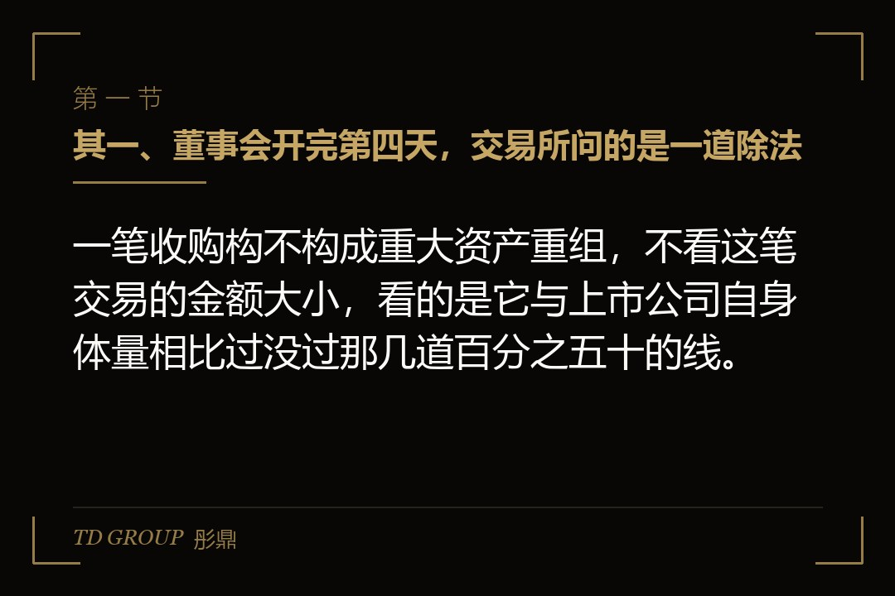
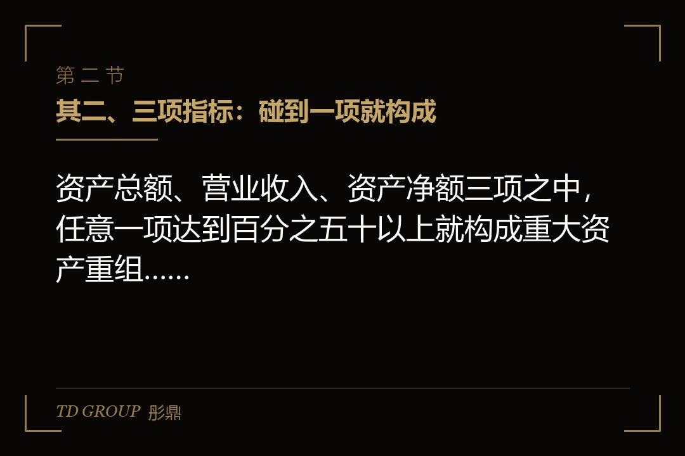
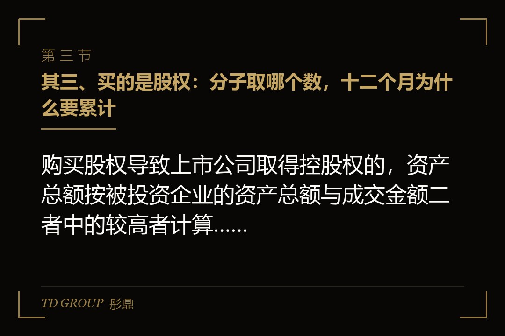

其一、董事会开完第四天，交易所问的是一道除法

结论先行：一笔收购构不构成重大资产重组，不看这笔交易的金额大小，看的是它与上市公司自身体量相比过没过那几道百分之五十的线。
假设有家在深市主板上市的汽车电子公司，最近一个会计年度末经审计的合并报表资产总额三十亿元、净资产十八亿元，当年营业收入二十二亿元。它要收购一家做车载雷达的公司百分之六十的股权，成交金额七亿元。
七亿元买一块股权，放在一家三十亿元资产规模的上市公司里，董事会讨论的时候没人觉得这算「重大」。公告发出去第四天，交易所的问询函来了，问的头一个问题是：请补充披露本次交易是否构成重大资产重组，并列示各项指标的计算过程。
问题出在算法上。购买股权导致上市公司取得被投资企业控股权的，资产总额那一项要按被投资企业的资产总额与成交金额二者中的较高者计算。那家雷达公司自身资产总额十九亿元，比七亿元的成交金额高出一大截，十九除以三十已经超过百分之五十。
这一篇按董秘的实际顺序拆：三项指标怎么数、买股权时那道除法怎么算、构成之后程序和停牌排成什么样、发行股份购买资产的定价与锁定期，以及审核会问到哪几处。
其二、三项指标：碰到一项就构成

结论先行：资产总额、营业收入、资产净额三项之中，任意一项达到百分之五十以上就构成重大资产重组，资产净额那一项另有五千万元的金额门槛。
《上市公司重大资产重组管理办法》第十二条列的是三项，分母都取上市公司最近一个会计年度经审计的合并财务会计报告数，这个时点是固定的。
资产总额这一项：购买、出售的资产总额，占上市公司最近一个会计年度末经审计的合并报表资产总额的比例达到百分之五十以上。营业收入这一项：该资产最近一个会计年度所产生的营业收入，占上市公司同期经审计的合并报表营业收入的比例达到百分之五十以上。
资产净额这一项：购买、出售的资产净额，占上市公司最近一个会计年度末经审计的合并报表净资产额的比例达到百分之五十以上，并且超过五千万元人民币。三项是并列关系，碰到任意一项就构成，不需要三项同时满足。
分母固定在「最近一个会计年度经审计」这个时点上，意味着同一笔交易在年报披露之前和之后，分母可能不是同一个数。跨年筹划的方案要特别留意：拖过一个年报披露日，构成与否有可能翻过来。
还有一档更重的。上市公司自控制权发生变更之日起三十六个月内，向收购人及其关联人购买资产，导致资产总额、营业收入、净利润、资产净额、发行股份比例等指标中任一项的比例达到百分之一百以上，或者主营业务发生根本变化的，构成重组上市。
重组上市那一档的门槛是百分之一百而不是百分之五十，看上去更宽，实际更严：它触发的是另一套审核标准，等同于重新审视这家公司是否符合上市条件。所以控制权刚变更过的公司，往里装资产的节奏要按三十六个月这条线去排。
其三、买的是股权：分子取哪个数，十二个月为什么要累计

结论先行：购买股权导致上市公司取得控股权的，资产总额按被投资企业的资产总额与成交金额二者中的较高者计算，营业收入直接按被投资企业的全额计算。
第十四条给的是计算口径，这一条比第十二条更容易出事，因为它决定了分子取哪个数。同样是买一块股权，取不取得控股权，算出来的比例能差出好几倍，而这一点在预案定稿之前常常没人专门去核。
买股权但不取得控股权的，资产总额取「被投资企业资产总额乘以所占股权比例」与成交金额二者中的较高者，营业收入取「被投资企业营业收入乘以所占股权比例」，资产净额取「被投资企业净资产额乘以所占股权比例」与成交金额二者中的较高者。
买股权并且取得控股权的，算法就变了：资产总额取被投资企业的资产总额与成交金额二者中的较高者，不再乘比例；营业收入直接取被投资企业的营业收入；资产净额取被投资企业的净资产额与成交金额二者中的较高者。开头那家汽车电子公司栽的就是这一条。
出售股权导致上市公司丧失被投资企业控股权的，资产总额、营业收入及资产净额分别按被投资企业的全额计算，同样不乘比例。卖掉一家并表子公司的控股权，哪怕只卖了百分之五十一的股权，指标也按这家子公司的全部数字来数。
再一条是累计：上市公司在十二个月内连续对同一或者相关资产进行购买、出售的，按累计数分别计算。标的资产属于同一交易方所有或者控制，或者属于相同、相近的业务范围的，可以认定为同一或者相关资产。已经按规定编制并披露过重组报告书的交易，不纳入累计范围。
这一条封的是拆单。把一笔七亿元的收购拆成三笔分三次做，指标照样累加。实务里更常见的不是故意拆，而是「先买百分之三十，过半年再买百分之三十」这种自然的节奏，结果第二笔做完回头一算，两笔合起来早就构成了。
其四、构成之后：程序和披露排成什么样
结论先行：构成重大资产重组的，要编制重组报告书、经董事会和股东会审议、聘请独立财务顾问与相关中介出具文件，并按交易所要求回复问询。
程序上头一道是董事会。董事会要对交易的必要性、标的资产的定价依据、对上市公司的影响作出决议，独立董事要发表意见；涉及关联交易的，关联董事回避表决。
接着是股东会。重大资产重组事项要经出席股东会的股东所持表决权的三分之二以上通过；构成关联交易的，关联股东回避表决，只数非关联股东的票，中小股东的表决还要单独计票并披露。
文件这一侧，核心是重组报告书，配套的通常有标的资产的审计报告、评估报告或者估值报告、独立财务顾问报告、法律意见书。采用收益现值法、假设开发法这类基于未来收益预期的方法作价，并且交易对方是上市公司控股股东、实际控制人或者其控制的关联人的，应当就实际盈利数不足利润预测数的情况签订明确可行的补偿协议。
交易对方在控股股东、实际控制人及其关联人之外的，业绩补偿不是强制的，由双方协商确定。这一点不少卖方不知道，谈判时把它当成必须答应的条件让了出去。
披露之后是问询。交易所的问询通常在公告后一到两周内到，问的集中在几处：标的资产估值的合理性、业绩承诺能不能实现、交易对方的资金来源与关联关系、标的公司的收入确认与客户集中度、以及交易完成后的整合安排。
回复问询是一件要花时间的事。一轮问询通常给十个交易日左右，需要延期的要申请并公告。一个方案走两到三轮问询是常态，所以从董事会到交易完成，半年是起步。
其五、停牌：现在是不停或者短停，不是停到方案做出来
结论先行：筹划重大资产重组原则上不停牌或者短期停牌，筹划发行股份购买资产申请停牌的，停牌时间不超过十个交易日。
这一条是很多老板认知没更新的地方。二〇一八年停复牌制度改过一次，方向是把「停牌筹划」改成「不停牌筹划」：上市公司股票原则上不停牌，确有必要的走短期停牌、间断性停牌。
按交易所的停复牌业务指引，筹划发行股份购买资产申请停牌的，停牌时间不超过十个交易日；停牌期间变更重组标的的，累计停牌时间同样不超过十个交易日。有关部门对停复牌时间另有要求而需要继续停牌的，连续停牌时间一般也不超过二十五个交易日。
复牌之前要拿出东西。上市公司筹划重大资产重组或者发行股份购买资产的，应当在申请复牌前披露经董事会审议通过的重组预案或者重组报告书。也就是说，那十个交易日是用来把预案定稿的，不是用来谈判的。
这件事对企业方的实际含义是：谈判和尽调要在不停牌的状态下完成，而不停牌就意味着知情人范围要严格控制、知情人登记要做全。信息管理没做好，方案还没成形，交易就先变成了一起调查。
所以现在的节奏通常是这样：前期接触和框架谈判在保密状态下完成，核心条款基本谈定、中介进场做完主要工作之后，才申请那十个交易日的停牌，把预案定稿、开董事会、出公告。停牌不是起点，是临门一脚。
具体的停牌天数与程序以交易所现行业务指引为准，不同板块、不同交易类型之间有差别，方案启动前要按当期规则再核一遍。
其六、发行股份买资产：定价、锁定期，和二〇二五年那次修订
结论先行：发行股份购买资产的发行价格不得低于市场参考价的百分之九十，参考价在董事会决议公告日前二十、六十、一百二十个交易日的均价里选一个。
价格这一侧的规则是给了选择权的：三个窗口任选一个作为市场参考价，再按不低于其百分之九十定价。选哪个窗口取决于哪一段对交易双方都能接受，这是方案设计里为数不多可以调的变量。
锁定期这一侧，以资产换取上市公司股份的交易对方，所取得的股份自发行结束之日起十二个月内不得转让；交易对方是上市公司控股股东、实际控制人或者其控制的关联人的，或者通过本次交易取得上市公司实际控制权的，或者取得股份时对用于交换的资产持续拥有权益不足十二个月的，锁定三十六个月。
二〇二五年五月，证监会修改了《上市公司重大资产重组管理办法》，几项改动直接影响方案怎么排。一项是分期支付：申请一次注册、分期发行股份购买资产的，注册决定有效期延长至四十八个月，等于允许把股份对价拆到几年里付。
另一项是简易审核程序：适用简易审核程序的重组交易，无需证券交易所并购重组委审议，证监会在五个工作日内作出注册决定。对够得上条件的交易，这把审核周期压掉了一大截。
还有两项与交易对方相关：上市公司之间吸收合并的，被吸收合并方控股股东、实际控制人及其关联人的锁定期为六个月，构成收购情形的按十八个月执行，其他股东不设锁定期；投资期限满四十八个月的私募基金参与第三方交易所取得的股份，锁定期由十二个月缩短至六个月。
这几条合起来传达的是同一个意思：把交易做成、把钱和时间对上。适用条件与具体口径以证监会和交易所的正式文本为准，启动方案之前要核当期版本。
其七、审核问到哪几处，企业方要提前备什么
结论先行：重组审核的问题集中在四处——标的估值、业绩承诺的可实现性、交易的必要性与协同性，以及标的公司自身的规范性。
估值是问得最多的。收益法下的关键假设——未来几年的收入增速、毛利率、折现率——每一个都要有依据。依据不是同行的平均数，是这家标的自己手上的在手订单、客户结构和产能安排。
业绩承诺紧跟其后。承诺的数与评估报告里的预测数是不是一致、承诺方有没有能力补偿、补偿方式是股份还是现金、用于补偿的股份够不够，这四件会被逐一问到。承诺定高了容易在第三年出事，定低了又说不过估值。
交易的必要性与协同性，问的是「为什么买」。跨行业收购要多解释几句：上市公司有没有相应的管理能力、人员怎么安排、买过来之后怎么管。近两年监管对跨行业并购的包容度是提高了的，但包容度不等于不用解释。
标的自身的规范性是另一条线，问的内容和首次申报上市那一套差不多：收入确认、关联交易、社保与公积金、环保与安全、资质许可能不能延续、历史沿革里的出资是否到位。这些是硬伤，谈判谈不掉。
企业方要提前准备的东西也就清楚了：标的最近三年的审计报告、在手订单与客户明细、评估所需的预测底稿与支撑材料、交易对方的出资与关联关系说明、同业竞争与关联交易的解决承诺，以及一张把停牌、董事会、股东会、问询回复串起来的时间表。
收口是这样：重大资产重组的难点从来不在「构不构成」，那只是一道除法，一个下午就能算完。难在构成之后的那半年里，要把估值、承诺、协同和规范性四件事同时讲圆，而这四件的材料，都要在董事会开会之前就备齐。